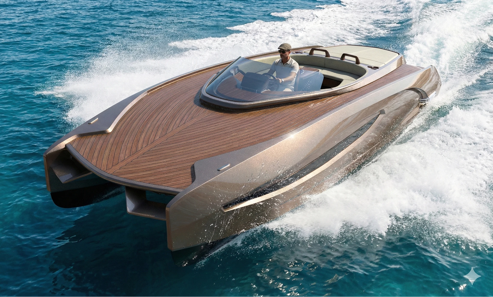
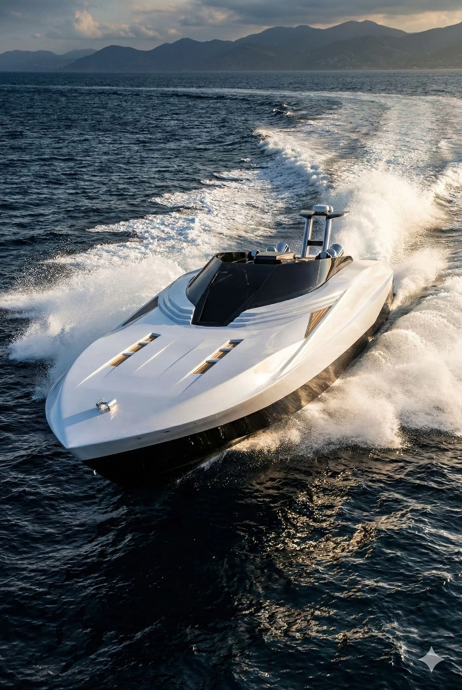
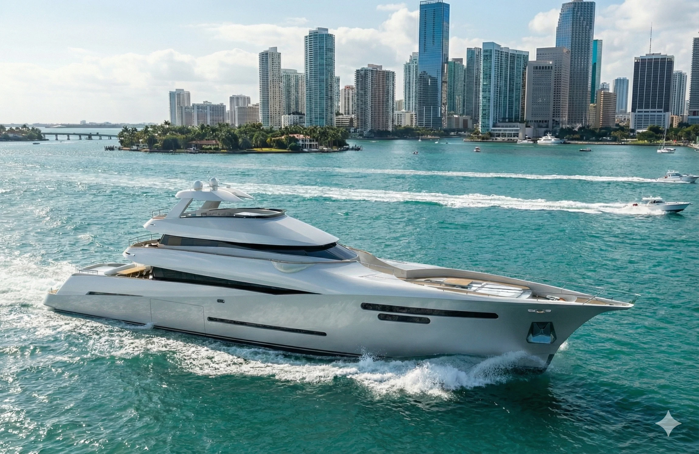
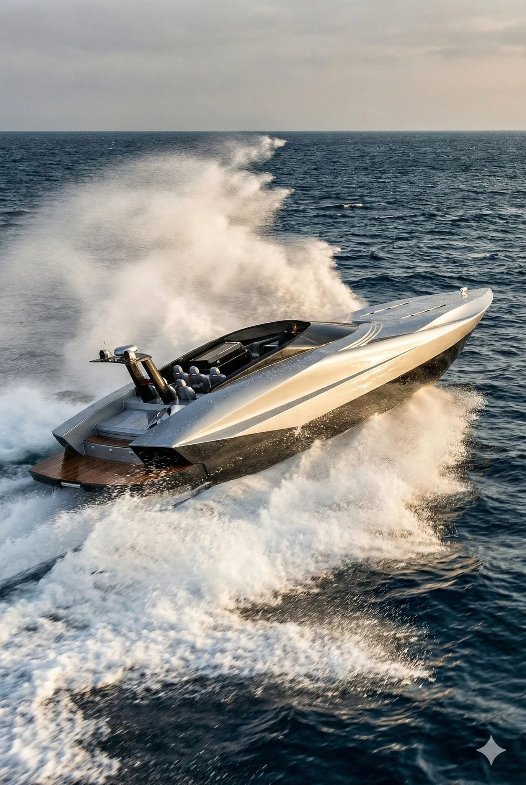

An Italian
way of living.
The art of living exceptionally, on water.
NAUTICAL
MAISON
A life
apart.
Lake Como. Italian elegance.
A new nautical imagination.
Five design expressions.
Quantum 999
The unexpected.
An original nautical design study. Explore the archive, its proportions and motion.

Archive media under verification
ARCHIVAL DESIGN STUDIES
PRIVATE CONCEPT PRESENTATION
The profile
Form becomes a feeling.
MAS 46 · ORIGINAL STUDYBeauty is
a discipline.
A study of proportion, material, light and the art of Italian design.



Every great object starts with an idea that deserves to become exceptional.
The lake
as origin.
The heritage of Lake Como is one of refined boatbuilding, engineering and an enduring relationship with the water.
VELLARIO is a new project inspired by that cultural tradition, not a claim to an established history of its own.
LAKE COMO · ITALIAN HERITAGE · NEW VISION
COMO
Something
extraordinary.
A new nautical maison. A personal conversation, when the time is right.